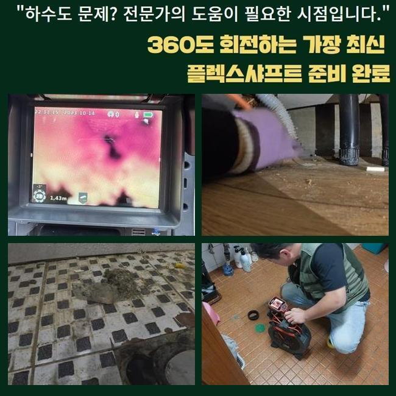
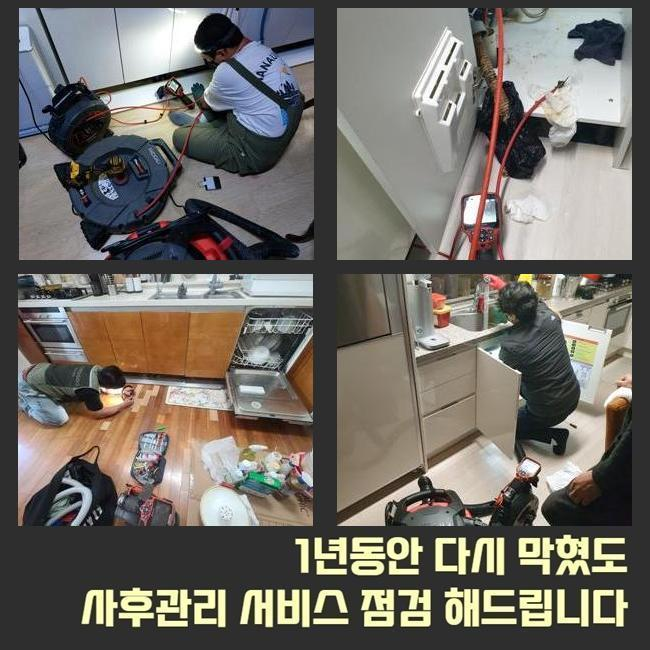
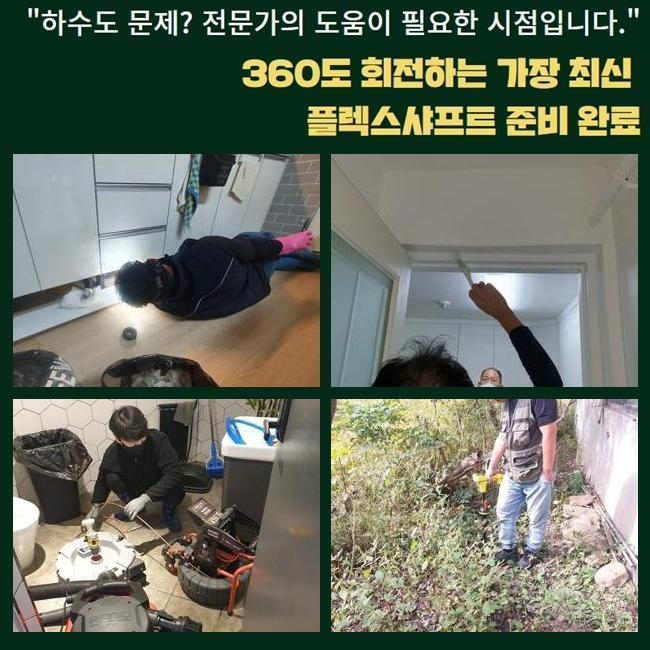
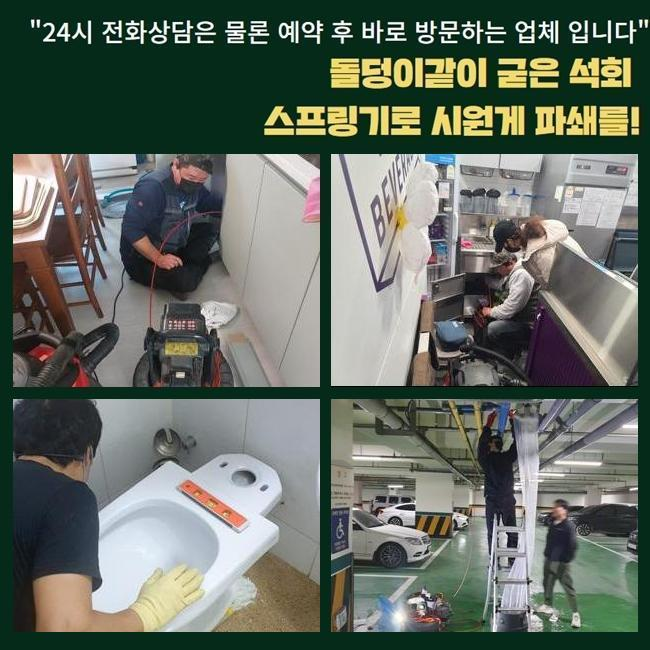
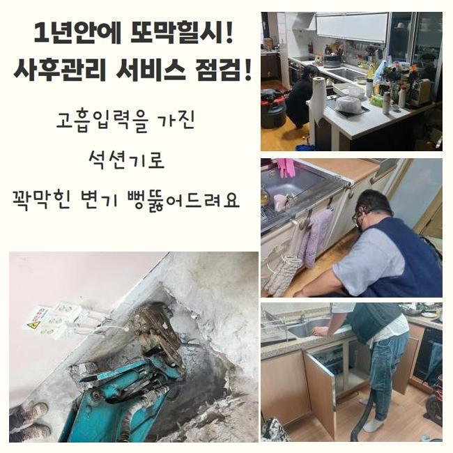

🏠 성남 창곡동욕실바닥막힘 태평동 횡주관청소 누수
성남 하수구막힘 전문 시공 후기

📋 작업 개요
- 위치: 성남
- 서비스 유형: 하수구막힘, 배관막힘, 누수수리, 뚫는업체, 배관청소, 고압세척, 배관보수
- 작업 일시: 2025. 2. 21. 8:16
- 업체명: 하수구수사대 (010-5615-2118)
🔍 문제 상황
성남 창곡동욕실바닥막힘 태평동 횡주관청소 누수
여러 활동으로 물을 활용하면 여러 사유로 인하여 배관 통로에 지저분한 것들이 층을 이루고 불어날 수 있어요
몸체가 커지다보면 마치 철옹성같이 고착화가 되기 때문에 쉽게 제거되기 어려워요
특유의 접착력으로 붙어있는 이물질을 처리해 내고자 과한 처사를 보이다가 배관 크랙이나 누수까지 되는 악화된 모습을 마주하게 됩니다
무엇이 잘못됐는지 식별되는 현장이라고 쳐도 배관용으로 출시된 장비를 활용해서 처리를 해줘야만 순조로우면서도 확실히 깔끔하게 배수구를 회복시킬 수 있습니다
스스로 뚫어보려고 애쓴다면 전체적인 문제를 전부 포착하긴 힘들며 괜히 시간만 버리게 됩니다
이번에 찾았던 작업장은 세입자의 거처였는데 역방향으로 하수가 되돌아오면서 실내가 지저분해져서 다급하게 고쳐달라고 접수를 해주셨습니다
신속히 서둘러서 작업에 들어가는 도구를 갖고 늦지 않게 도착을 했었습니다
당장에 문제성 하수구로 향해서 어떤 상황인지 살펴보니 바닥의 하수구 아래에서 물이 분출되는 상황이더라고요
저희를 찾기 전에 유통되는 배관 청소제로 뚫어보려고 노력했지만 막힌 상태에서 나아지지 않는 모습이었다고 합니다

🔎 원인 분석
💡 전문가 진단: 정밀 진단 장비를 사용하여 슬러지의 고착 여부를 판명하고 타격/세척 작업을 실시했습니다.
물이 울컥거리면서 튀어나와서 악취까지 상당해서 들어서자마자 두통이 생겨서 시간을 보내고 계셨다고 합니다
하수구의 이슈를 철저하게 극복하기 위해서는 무슨 문제가 단초가 되어 하수관 관련한 문제점이 만들어 졌는지 확고하게 디테일을 파악해야 합니다
본격 작업착수에 앞서서 내부 관측을 돕는 내시경을 우선 배치하여 보이지않는 속사정을 확인했어요
이 카메라를 돌려서 세세하게 관측해보니 관로의 여기저기에 유지가 가득 쌓여있는 것이 문제의 근원이라고 유추할 단서를 얻게 됐습니다
하나의 덩어리화가 된 압축된 유분조직을 억지로 해체시키고자 한다면 배관 표면에 마모가 일어날 위험성이 도사리고 있습니다
이물질 특성에 따라 제거해주는 전문 장치를 쓰는 편이 자극없이 고치는 방법입니다
이렇게 내부 탐방을 통해서 파악한 세부 사항을 고객님께 상세하게 알려드린 후 청소에 최적화된 장비를 적용해서 정화를 해주었어요
고압의 물을 활용한 작업이 진행됐고 상당 부분 깨끗하게 만들고서 아까 진행하던 배관 카메라의 도움으로 순조로운 진행이 됐나 확인했어요
잔수가 어느정도 흐르는 걸 보았으나 아직까지는 제거작업이 남아 있는 상황이어서 계속 임하고 있던 고압세척을 이어갔습니다
통수를 가로막던 유지방이 풀리고 관통이 완료되었음을 여러차례 검증하고 나서 작업을 마무리 짓게 되었습니다

🔧 작업 과정
종료를 앞두고도 변화된 곳을 봤는데 번들대던 까만 유분기들이 전량 청소가 완료되어 배수로가 맑아진 결과물을 받아보게 됐습니다
관로의 이곳 저곳에서 강하게 응고되어 있었던 기름덩어리의 존재감이 인상적일 정도였지만 스케일링 장비를 추가로 투입하지 않고도 상황이 종결됐기에 시간을 아낄 수 있었어요
만일 이와 같은 슬러지가 아니고 대형 석회물질로 인해서 문제가 일어났다면 단순한 절차로는 종결되지 않아요
석회화된 노폐물이 떡하니 차지하고 있었다면 장비를 마구 돌려서는 안 되고 결합된 석회가 풀릴 때까지 용해제로 전처리를 합니다
이렇게 연화시키는 약물을 주입한 뒤에 시간을 두면 겉으로 흰 거품이 나오게 되는데 물을 조금씩 내려보내며 습기를 더한다면 화학 반응이 일어나면서 연화작용이 일어나요
하수구 석회 분해제는 일반 마트나 가게에서 바로바로 사진 못하니 석회가 자리한다는 사실을 파악하신 분은 셀프가 아니라 하수구 전문 서비스를 받아야만 재발 없이 안정화를 할 수 있습니다
셀프 클리너를 부어서 통수를 내보려는 상황이 있는데 석회때문에 생긴 사태에는 클리너 기능으로는 미처 해결하지 못해요
하수관의 불통이 빚어지는 사유는 짐작하기 힘들기 때문에 뚫는 작업으로 건너뛰지 말고 먼저 내시경 기기를 안으로 보내어 가로막힌 쪽들이 어딘지 체크해야만 확실하게 배관로를 닦아낼 수 있습니다!
도구 없이 봐서는 어둡고 깊은 하수구의 하수 설비의 구조를 식별하기 복잡합니다
그러므로 내시경을 통해서 내부를 진단하는 과정이 더욱 중요한 것입니다
하수구가 고장나는 일은 짧은 기간 생기지 않고 설비가 설치된 오랜 기간 동안 이물질과 더러운 노폐물이 차곡차곡 쌓여가다가 견고한 결합체로 굳어져 버립니다
아예 막혀버리지 않게 경각심을 가지고 쓰는 것이 바람직한데 예를 들면 일정한 시기마다 온수를 배수관 안으로 부음으로써 자리를 잡으려는 오물들이 떠내려 가도록 신경쓰는 게 좋습니다
사실 초반부터 찌꺼기가 깊숙이 자리하지 않도록 촘촘한 필터나 트랩을 씌우고 쓰시는 게 훌륭한 방법이기도 해요
흔한 주거지를 포함하여 상가주택이나 빌딩 등등 수도를 쓰는 곳에서는 이와 같은 하수구에 대한 사태를 직면할 수 있습니다
유독 배출이 느려진 것을 감지했다면 상황이 더 나빠지지 않게 신속한 작업이 이뤄져야 할 것입니다
막힘이 심화되다보면 잔수가 역 배출되어서 심각한 악취를 비롯한 사태까지 이르게 됩니다


✅ 작업 완료
역행이 한번 생겨버리면 아랫집까지도 손실이 일어날 수 있으므로 피해를 복구하는데 쓰이는 비용마저 자신이 부담해야 할 수 있거든요
애초에 관로가 오염되지 않도록 각별히 검열하면서 사용 하셔야 부담이 적을 겁니다
이런 방식으로 평소 모범적으로 절차를 지켜도 시간이 오래 된다면 막힘 사태가 어느순간 생길 수 있습니다
흐름이 곧 괜찮아지겠거니 간과하지 마시고 저희에게 고장난 하수구에 대한 보수를 요청주시기 바랍니다


⚠️ 베란다 누수 및 방수 관리 방법
- ✅ 비가 많이 올 때 창틀 주변이나 아래층 천장에 얼룩이 생기는지 정기적으로 확인해 보세요.
- ✅ 우수관 주변 실리콘 마감이 들뜨거나 깨진 틈새가 있는지 손상 여부를 수시로 체크하세요.
- ✅ 베란다 바닥 타일의 줄눈(메지)이 소실되면 그 틈으로 물이 침투하여 누수가 유발됩니다.
- ✅ 누수 의심 증상 발견 시 방치하면 아래층 손실이 커지므로 즉시 전문가의 진단을 받으십시오.
💡 핵심 정리
- 확실한 장비 작업(내시경 점검 및 샤프트 스케일링)으로 원인을 뿌리 뽑습니다.
- 작업 후 1년 이내에 동일한 부위 재발 시 100% 무상 A/S 서비스를 보장합니다.
- 서울 · 경기 · 인천 전 지역에 24시간 언제든 긴급 출동할 수 있도록 항시 대기 중입니다.
❓ 자주 묻는 질문 (FAQ)
🚨 성남 하수구막힘 문제로 고민이신가요?
정확한 원인 진단과 확실한 시공으로 재발 없는 해결을 약속드립니다.
24시간 긴급 출동 | 서울 · 경기 · 인천 전지역 | 1년 내 재발 시 무상 A/S